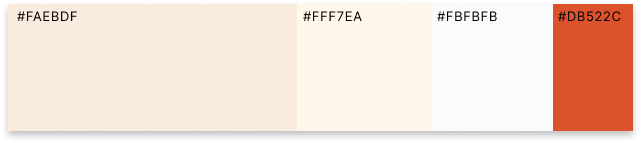

ターゲット
Target
子育て世代の30～40代の共働き主婦中心。
Target
子育て世代の30～40代の共働き主婦中心。
Task
ターゲットは忙しくてスーパーに行く時間がないが、子どもに安心して食べさせられる野菜を選びたい。
Goal
サイトを利用してもらい、野菜が手軽に届くことの価値を伝え、サービスの継続的な利用につなげる。
Information
子育て世代中心のため、スマホからでも手軽に利用できるように、スマホに最適化したウェブサイトを作成しました。 オーガニック野菜の特徴やこだわりを伝えた後、商品紹介で実際のセット内容を見せて、注文しやすくするように。初回限定のお試しセットを目立たせることで初回の購入のハードルを下げる工夫をしました。
Design
緑とベージュといったナチュラルで家庭的な色味を中心にしながら、初回限定のボタンには赤を使い目立たせることで、まずは試してもらおうという行動につなげやすくしました。 お客様の声や実際の生産者の方を写真付きで紹介することで、子供が安心して食事をしている様子を見ていただき、購入者に安心して注文いただけるようにしました。
Range
企画
デザイン
コーディング
2日
7日
5日
Software
Figma / Photoshop / Illustrator / VS Code
別の作品